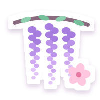

My world
My sticker collection of the things that make life a little brighter, then a peek at my vanity and what's on my headphones. Tap a sticker to flip it over ✿

flowers flowersWisteria and cherry blossoms, equally. I’ve kept them with six more favorites in my little flower journal.
open my flower press ↗ drinks
drinks
drinks
drinksMatcha and bubble tea for comfort. Caffeine for debugging. Hydra keeps an eye on that second one.
open my drink bar ↗a few of my favourite things ♡
- colourpurple (obviously)
- seasonspring
- flowerswisteria & cherry blossoms (a tie)
- drinkmatcha & bubble tea
- foodanything Japanese
- gamesbig, beautiful open worlds
- storiesones I think about for weeks
- musicrock & metal, played loud
- treasureamethyst & starry skies
- nailsdark amethyst magnetic, for now
- vibesoft, cosy & a bit magical
- placesomewhere peaceful
- time of daywhenever the code finally works
Beauty & style
Nails, hair and perfume: the girly side of my room. My face is honestly the simple part (eyeliner, mascara, maybe a little foundation), so these are the drawers I actually live in. The photos are other people's lovely work, not me. Tap one for the details and who took it.
My nail drawer
My own little corner for pretty polish, dramatic dream sets, and the occasional very impractical nail. Take a seat. We have a lot of purple to get through.
My signature set ♡
Deep amethyst · medium-long almond
Magnetic cat-eye · glossy · a whisper of silver
If you told me I could only wear one nail design forever, I'd probably choose this. Deep purple, glossy, a little magical, and just dramatic enough to make me stare at my own hands.
The sets living in my head
Eight manicures I'm convinced I need to try at least once.
questionable.
Custom manicure illustrations, made for this little studio. These are design ideas, not photographs of my hands.
Paint a set ♡
A little manicure station. Pick a favorite, then make it yours.
can't pick a nail shape.
Amethyst After Dark
The inspiration board
Other people's lovely work. My very enthusiastic notes.
this finish.
All photographs are inspiration from other people, never me. Open one for the photographer's credit and the original source. The purple cat-eye reference is an illustration.
Unpopular nail opinions ♡
Little notes from
my nail drawer
Almond, coffin, square,
stiletto, round.
I'm not choosing.
Hair diary ♡
Brunette by nature. Emotionally purple. A few pretty ideas tucked beside my hairbrush.
My hair right now ♡
- Dark brunette, thick, and naturally wavy
- Curls toward the ends
- Around shoulder length, with layers
- Usually worn down
- Best when it's glossy and full of movement
My hair has opinions. I love it most when it's soft, shiny, and doing that pretty swishy thing instead of fighting me.
Looks I keep saving
These are other people's lovely hair, never me. Open a photo for a closer look and the photographer's credit.
Colors I think about too much
Every time I decide I'm staying brunette, purple comes along and causes problems.
I'd talk it through with a colorist first. My dark starting color affects the result; brighter shades may need lightening, and these tones need refreshing.
If I went to the salon tomorrow
- Keep my dark brunette
- Soft face-framing layers
- Keep most of my length
- Make it bouncy
- A glossy blowout, please
I don't want a whole new identity. I just want prettier movement.
Tiny hair thoughts
The rest of my inspiration folder ♡a few more photos tucked away
My saved references, with all the original photography credits. None are photographs of me.
Naturally brunette. Still thinking about purple. ♡
My perfume shelf
My favorite scents, with little illustrated bottles to match their mood. Some sweet, some soft, some with a little attitude. ♡
My six favorites, on the main shelf
One more spray
and I'm ready.
Probably.
Six little personalities, one very indecisive girl.
Perfumes I'm not entirely sure about yet. Which makes me want to smell them even more.
Just curious, for now. These are my to-smell notes. ♡
A little cherry
obsession
Sweet, juicy, sometimes a little dark. Cherry has my heart, especially when it smells like the perfume equivalent of glossy black-cherry nails.
Certified cherry girl 🍒On my wishlist ♡
My purse has asked
me to stop looking.
Things I absolutely do not need, but would still love to find sitting on my vanity.
Perfume confessions
Pretty bottles. Strong opinions. A few things I should probably admit.
A little credit where it's due
I keep little scent sketches here, each with its own color and mood. The bottle illustrations are decorative; the real fragrance names, notes, and editions are linked below. My opinions are my own little corner of the story.
On my headphones
Music is a huge part of me, and most of it is loud. Rock, metal, metalcore, nu-metal and alternative rock come first. Then there's rap for confidence, pop for good moods, and soft songs for when it's far too late. I have a playlist called Full Force and another called A Little Too Pretty, which is me in two playlists.
I keep Spotify off this page until you choose “load Spotify player.” Its player may use cookies and collect device and listening information. I can’t control Spotify’s data practices. My privacy note · Spotify’s privacy policy.
- 1. Haunt MeBlindlove
- 2. MamacitaVOILÀ
- 3. DeathwishThree Days Grace
- 4. Bad for Mehonorable fourth ♡VOILÀ
I write these in by hand, so it's never live.